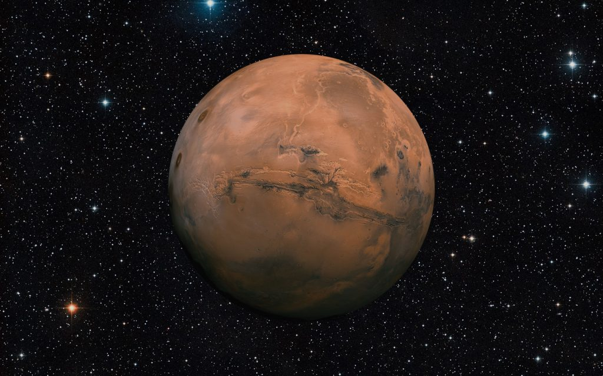
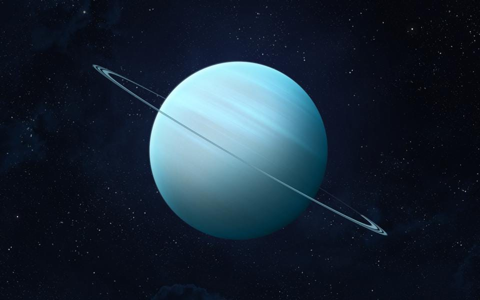
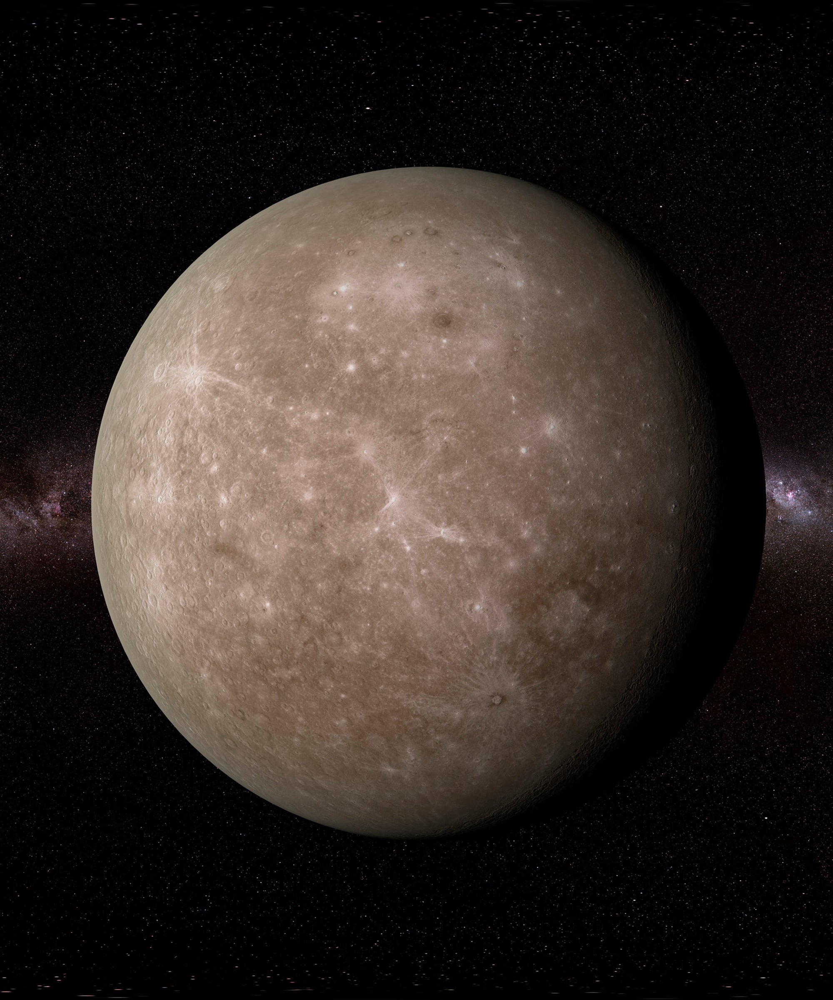

| Mars | Uranus | Mercury | Saturn | |
|---|---|---|---|---|
| Picture |  |  |  | |
| Gravity (m/s2) | 3.7 | 8.7 | 3.7 | 9.0 |
| Diameter (km) | 6792 | 51,118 | 4879 | 120,536 |
| Orbital Period (days) | 687.0 | 687 | 1270 | 1638 |
| Number of Moons | 2 | 27 | 0 | 82 |
| Escape Velocity (km/s) | 5.0 | 21.3 | 4.3 | 35.5 |
| Density kg/m3) | 3934 | 1270 | 5429 | 687 |
| Aphelion 106 km) | 249.3 | 3001.4 | 69.8 | 1506.5 |